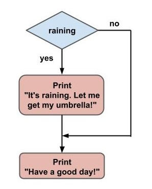
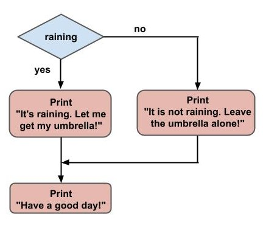
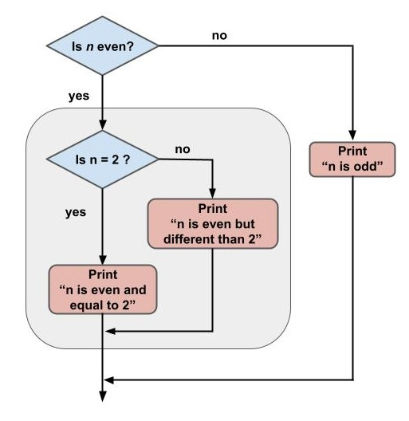
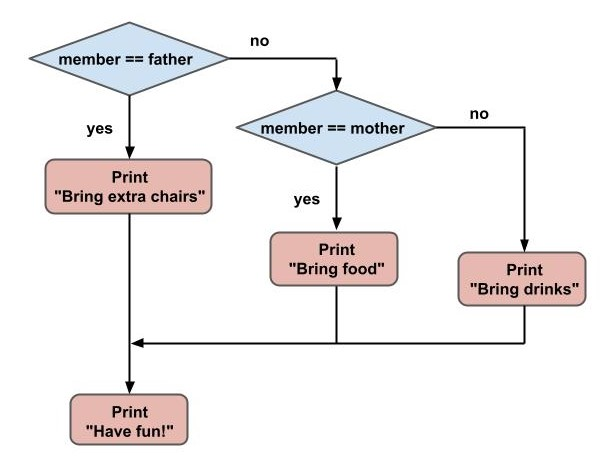

Chapter 8: Conditional statements: if, elif, else#
Conditional statements are almost everywhere in computer programming. This part of the course will teach you about simple decisions you can work with on your Python programs.
You make simple decisions in your everyday life, based on a number of variables. For example, if you know that is raining or is going to rain today, you may decide to take an umbrella when going out. Or if you get a call on your phone you will decide weather you attend it or not based on who it is.
Python programs can deal with simple decisions like those by combining boolean expressions and the if statement, which you will learn about shortly.
Revisiting the boolean data type#
Think about the raining example of the introduction. How do you decide weather to take an umbrella or not? You have to check if its raining. If you ask yourself, is it raining? What are the possible answers? Yes or No. Python has a special data type to deal with such binary values: the boolean data type.
Remember that boolean variables can take two values: True or False. For our example, True will be the Yes, while False is the No. You have learned the very basics of the boolean data type in a previous tutorial. Let’s go further now that you need this data type to make simple decisions.
Boolean values and variables#
Boolean values can be directly defined with the keywords True or False:
>>> raining = True
>>> raining
True
>>> raining = False
>>> raining
False
In this case the variable raining will contain True or False, depending on weather it is raining or not outside. Once you define your variable, you will make use of it for the logic of simple decisions.
Boolean operators: and, or, not#
Boolean logic can be much more complex than just defining a single value as True or False. Imagine you want to check if two different variables are True at the same time. For this you can use the and boolean operator:
>>> raining = True
>>> cold = False
>>> raining and cold
False
The different combinations for the and boolean operator are on the table below:
a |
b |
a and b |
|---|---|---|
True |
True |
True |
True |
False |
False |
False |
True |
False |
False |
False |
False |
Another boolean operator is the or, which is used to check if at least one of the variables is set to True.
>>> raining = True
>>> cold = False
>>> raining or cold
True
The combinations for the or operator are:
a |
b |
a or b |
|---|---|---|
True |
True |
True |
True |
False |
True |
False |
True |
True |
False |
False |
False |
The not operator negates the value:
>>> raining = True
>>> not raining
False
>>> raining = False
>>> not raining
True
Here is the table for the not operator:
a |
not a |
|---|---|
True |
False |
False |
True |
Simple decisions: the if statement#
Let’s see how a simple decision can be automated with a Python script. First of all, define a variable called raining, and assign it the value True, meaning it is actually raining today. Then comes the if statement, followed by a boolean expression. In this case the boolean expression is simply the variable raining containing the boolean value True. In the same line at the end, finish with a colon :.
Below the if statement comes the body. This is the part of the script you want to be executed only in case the boolean expression has a value of True.
raining = True
if raining:
print("It's raining. Let me get my umbrella!")
print("Have a good day!")
# It's raining. Let me get my umbrella!
# Have a good day!
As you can see, the body of the if statement, that is the first print, executes because the boolean expression (the variable raining) has a value of True. What happens if the raining variable is set to False?
raining = False
if raining:
print("It's raining. Let me get my umbrella!")
print("Have a good day!")
# Have a good day!
The script does not print the first message because the if statement encounters an expression that has a value of False. Then, the body of the if statement is skipped (not executed). Only the last message is printed to the screen, because that one is not part of the body of the if statement.
The body of an if statement can have more than one line. For example:
raining = True
if raining:
print("It's raining. Let me get my umbrella!")
day = 'Sunday'
print('Today is ' + day + '. Have fun!')
print("Have a good day!")
# It's raining. Let me get my umbrella!
# Today is Sunday. Have fun!
# Have a good day!
In this example the body of the if statement has three lines. When the boolean expression of the if statement has a value of True, the whole contents of the body will execute before moving on. In case it is False, the complete body will be skipped.
Flowchart diagrams#
When dealing with simple decisions like the ones you are learning in this article, it is a good idea to organize your program and think about its logic before moving on to writing any code. This is a great idea specially when a program is getting too complex and the code is harder to read. A flowchart diagram for the last example would look like this:

Fig. 15 Flowchart diagram#
The diamond shaped box contains the conditional decision, which will be part of the if statement in your program. In this case that is the raining boolean variable.
The rectangular boxes shows what the code will do, in this case those are simple print statements, but it can be much more than that, such as assigning values to variables, or more if statements.
The arrow lines indicate the flow of the program. Each diamond shaped box in this case can follow two possible paths: one for the case that the boolean expression has a value of True, and another when it is False. You can use True/False instead of yes/no in the diagram. For this example the True case makes it go to the first print statement, while the False case avoids the first print and jumps directly to the second one.
Python indentation#
In all the examples where there is an if statement you may have noticed that the body is not in the same level as the rest of the lines of the script. If you are using a text editor like Sublime or VS Code, hitting Enter after the line containing the if statement (right after the colon) will make an automatic indentation for you.
In case you are not using a text editor that makes the indentation automatically, you will have to make it yourself. The indentation can be made using a tab, or using 2 or 4 spaces. What happens if you don’t indent your code? Try the following, without indentation:
raining = True
if raining:
print("It's raining. Let me get my umbrella!")
'''
File "pythoncourse.py", line 4
print("It's raining. Let me get my umbrella!")
^
IndentationError: expected an indented block
'''
Python will throw and IndentationError, which is very helpful for debugging purposes. It actually points where the indentation was expected in your code.
In other programming languages this is a good practice that improves readability of your code. But in Python the indentation is something that is used specifically to group blocks of code belonging to different parts of the script, for example the block code of an if statement. Indentation in Python is not optional, is mandatory.
The else statement#
What if you want to print a different message if the condition is not met? In the previous example the message “Have a good day!” was shown weather it is raining or not. Let’s leave that message as it is, but let’s see how you can include an extra message for the case where is not raining outside.
The else statement comes into play for this example. After the if statement and its corresponding code block, include the keyword else at the same level of indentation as the if statement, finishing with a colon :. Then comes the code block belonging to the else statement with the new message.
raining = True
if raining:
print("It's raining. Let me get my umbrella!")
else:
print("It is not raining. Leave the umbrella alone!")
print("Have a good day!")
# It's raining. Let me get my umbrella!
# Have a good day!
After running the example where raining is set to True, only the first message is printed to the screen, just as the previous example. What happens when you set the variable raining to False?
raining = False
if raining:
print("It's raining. Let me get my umbrella!")
else:
print("It is not raining. Leave the umbrella alone!")
print("Have a good day!")
# It is not raining. Leave the umbrella alone!
# Have a good day!
In this case, only the second message is printed to the screen. The code block belonging to the else statement is executed only when the boolean value resulting from the if statement evaluates to False.
A flowchart diagram for this example would look like this:

Fig. 16 Flowchart diagram with if/else#
The False case now has a path with a print statement in between, making it show a custom message in between instead of jumping to the end of the script.
Nested if-else statements#
So far you have seen simple if-else statements, where a block of code is executed only if a condition is met, and another if the condition is not met. But if-else statements can be made more complex by chaining more than one of them together.
For example, say you are working on a math problem where you have an integer number, and you want to check if that number is even or odd. Only in case the number is even (a multiple of 2), check if the number is equal to 2. Let’s make a diagram to organize the logic before writing any code.

Fig. 17 Flowchart diagram with nested if/else#
The first thing the program will do is to check weather the number n is even or odd. The diamond shaped box indicates that this is part of a main if statement. If the number is not even, it means that is odd, and the program should terminate with a message saying that the number is odd.
If the number is even, you have to make another decision to check if the number is equal to 2 or not. Make another if statement to check for the equality, and if the number is equal to 2, show a message indicating that information, and leave the program. If the number is different than 2, print a different message and leave the program. For this later case you should make use of an else statement.
To check if a number n is even or odd you can make use of the modulo (or modulus, or remainder) operator, symbolized by %. This operator returns the remainder of the division between two numbers. When you divide a number by 2, you can get two possible remainders: 0 or 1. If you get a remainder of 0, it means the number is a multiple of 2 (even), while if you get a remainder of 1, the number is not a multiple of 2 (odd). Open a Python interpreter and try out the modulo operator with different integer numbers:
>>> 1%2
1
>>> 2%2
0
>>> 3%2
1
>>> 4%2
0
>>> 132%2
0
>>> 767%2
1
>>>
To check the equality between the remainder of a number with 2 and 0, you can use the == operator, which returns True if both sides have the same value, otherwise it returns False. The condition n%2 == 0 returns True for even numbers and False for odd numbers.
n = 5
if n%2 == 0:
# Here comes the main if block
Inside the main if block comes another if statement to check if the number is equal to 2. If it is equal, print a message indicating this fact, and if it is different print another message (using an else statement).
Below the last print make another else statement, this time at the same level of indentation as the first if statement, since this last else belongs to the first if. This corresponds to the case where the number is odd.
n = 5
if n%2 == 0:
if n == 2:
print("n is even and equal to 2")
else:
print("n is even but different than 2")
else:
print("n is odd")
Things are getting complicated, right? This is just the beginning. Once you get comfortable understanding and coding such logics, you can move on to more advanced topics. At the end of this article you can practice more on this with the exercises.
The elif statement#
Let’s work on another example to see how you can make a still more complex logic. Imagine you are organizing a family dinner, and each of the family members have to bring something different to the meeting. The members can be your father, your mother and others.
Your father has to bring extra chairs (because you only have two chairs at your house), your mother brings the food, and everyone else the drinks. All of you still needs to decide on who is gonna cook, and who is gonna do the dishes. Let’s leave this for a future tutorial where you can make use of random techniques with Python.
Let’s make a simple Python program that takes a string variable member containing the name of the family member and prints a message indicating what he/she needs to bring to the reunion. Before moving on to the code, let’s do a flowchart.

Fig. 18 Flowchart diagram with elif#
Start by checking if the member is the father. In case it is, print a message indicating that he needs to bring extra chairs. In case the member is not the father, you still need to check if it is the mother or not. If it is the mother, print a message saying that she needs to bring food, and exit the program. If the member is not the mother, there is only one last case in which the member (whoever it is) has to bring drinks. After that, exit the program and print a “Have fun!” message.
As you can see this example is similar to the last one, where you learned how to make nested if statements. But this is different because the nesting is on the negative (False) part of the decision. You could make this work by combining an else followed by an if statement, but Python has a built-in keyword to make this easier which is the elif statement.
Start with the if statement, checking if the member is the father. In case it is, print the corresponding message (after that, the program will automatically exit the if statament). Then instead of an else statement, place the elif statement at the same level of indentation as the if, and write the second condition, where the member is equal to the mother. If this is the case, print a message to bring the food. Finally, finish with the else statement in case the member is other than the father or the mother, in which case the message is to bring drinks.
member = 'father'
if member == 'father':
print('Bring extra chairs')
elif member == 'mother':
print('Bring food')
else:
print('Bring drinks')
print('Have fun!')
You can make use of more elif statements in case you want to check for different members of the family.
Conclusion#
In this article you learned about conditional statements and simple decision making for Python programs. Conditional statements are made with the keywords if, elif and else.
Flowchart diagrams are a great way to organize the logic of your programs, specially when they get long and complicated. You have learned how to read and construct simple flowchart diagrams for simple decision making programs.
After you read the contents of the article, keep practicing to fully learn the conditional statements topics.
Exercises#
To recap the basics of boolean logic, what are the possible values a boolean variable can take?
Write a Python program to check if a given integer number (different than zero) is either positive or negative. Draw a flowchart diagram before writing any code.
Write a Python program similar to the one of exercise #2, and if the given number is positive, check if that number is equal to 10.
Write a program similar to that of exercise #2, but letting the number be zero also. Use the
elifstatement somehow.How can you check if a given positive integer number is a multiple of 5? Write the boolean condition and test it against different numbers.
Write a program that given a string checks if its length is less than 10. In case it is less than 10, print a message with that information. If the length is not less than 10 (meaning the length is greater than or equal to 10), print a different message. Finally, the remaining case would be that the length is exactly equal to 10, in which case print a message with this information.
Write a program that, given a variable of any type (string, integer, float, dictionary, etc), prints a message saying the type of the variable. For example, if the variable is
my_variable = [1, 2, 3]the program should print something like ‘Your variable is of the list type’. You should make use of multipleelifstatements for this exercise. The boolean expression to check if a variable is, for example, an integer, istype(my_variable) == int.